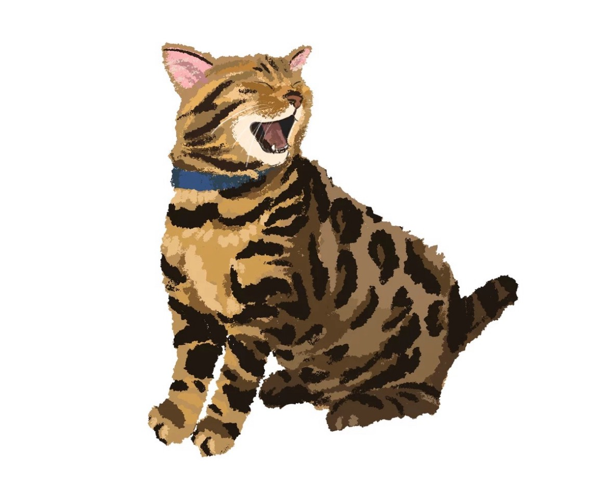

2026 APPLE & ELLY
瀏覽
排班
全部顯示
2026/01
2026/02
2026/03
2026/04
2026/05
2026/06
2026/07
2026/08
2026/09
2026/10
2026/11
2026/12
1. 選擇人員
選人...
2. 選擇班別
請先選擇人員
已選日期
0
清除選取
儲存
0
日
一
二
三
四
五
六
讀取資料中...
編輯備註
取消
儲存
資料診斷
正在讀取...
關閉
資料同步中...